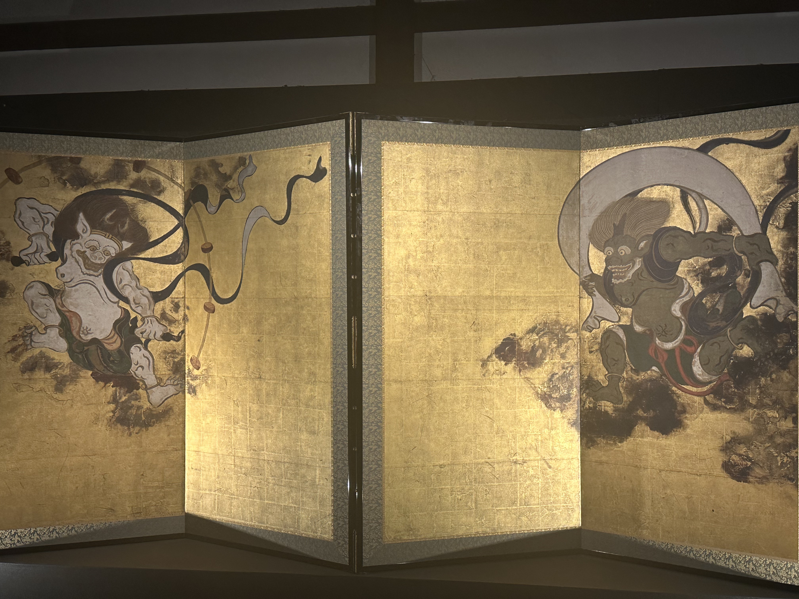
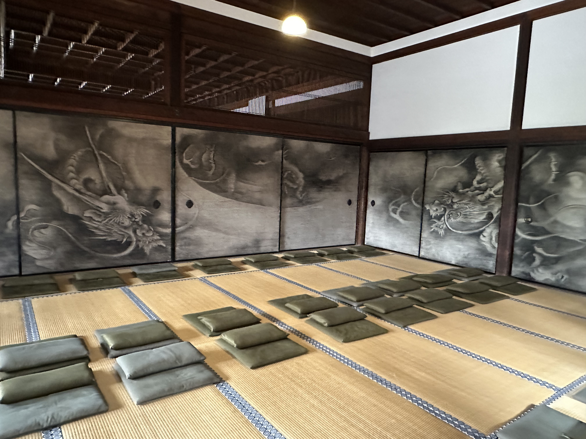
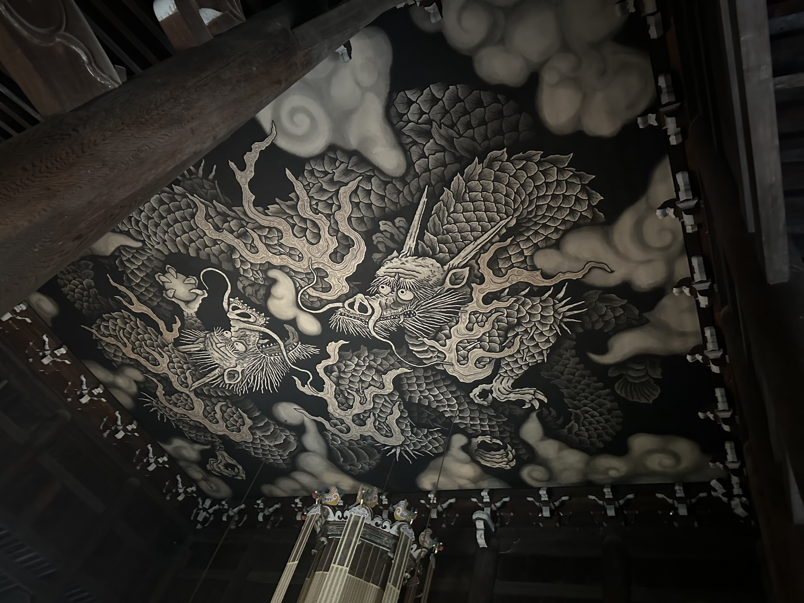

建仁寺（けんにんじ）は、京都市東山区に位置する日本最古の禅寺の一つです。1202年に栄西禅師によって開山され、臨済宗建仁寺派の大本山として知られています。建仁寺はその美しい庭園や建築だけでなく、多くの貴重な美術作品を所蔵しており、訪れる人々に禅の精神と日本の文化を感じさせます。
風神雷神図屏風は、建仁寺の代表的な美術作品の一つです。風神と雷神が金箔の背景に描かれており、その力強い筆致と迫力ある表現は見る者を圧倒します。この屏風は、俵屋宗達の作品として有名であり、日本美術の重要な遺産です。
建仁寺の禅堂には、見事な龍の襖絵が飾られています。この襖絵は、墨一色で描かれた壮大な龍の姿が特徴で、禅の精神を象徴するものとされています。畳の上に整然と並べられた座布団が、静かな瞑想の場としての雰囲気を一層引き立てています。
建仁寺のもう一つの見どころは、天井に描かれた龍図です。この龍図は、圧巻のスケールで天井全体に描かれており、その細部に至るまで精緻に表現されています。龍の躍動感と力強さが、訪れる人々に深い印象を与えます。
建仁寺は、その美しい庭園や建築だけでなく、数々の貴重な美術作品でも訪れる人々を魅了します。風神雷神図屏風や龍の襖絵、天井の龍図など、いずれも日本の文化と歴史を感じさせる素晴らしい作品です。京都を訪れる際には、ぜひ建仁寺を訪れ、その静寂と美を堪能してみてください。